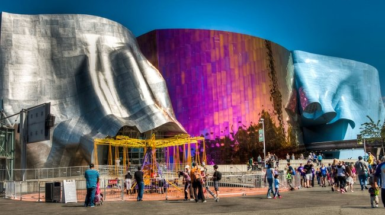

MoPOP, Seattle, USA
Bryła budynku zaskakuje niezwykłą i wyszukaną formą. Autorem projektu jest Frank O. Gehry. Interaktywne muzeum poświęcone jest różnym gatunkom muzyki współczesnej oraz fantastyce naukowej. Charakter architektury został dopasowany do prezentowanych wewnątrz ekspozycji. Struktura muzeum symbolizuje swobodę muzyki i wyzwalaną przez nią energię. Zewnętrzna część elewacji została wykonana ze stali nierdzewnej i aluminium. Przez bryłę budynku przejeżdża kolejka. Inwestycja sfinansowana została przez współzałożyciela firmy Microsoft – Paula Allena. qweeeeeeeeeeeeeeeeeeeeeeeeeeeeeeeeeeeeeefejfioejfi została wykonana ze stali nierdzewnej i aluminium. Przez bryłę budynku przejeżdża kolejka. Inwestycja sfinansowana została przez współzałożyciela firmy Microsoft – Paula Allena. qweeeeeeeeeeeeeeeeeeeeeeeeeeeeeeeeeeeeeefejfioejf została wykonana ze stali nierdzewnej i aluminium. Przez bryłę budynku przejeżdża kolejka. Inwestycja sfinansowana została przez współzałożyciela firmy Microsoft – Paula Allena. qweeeeeeeeeeeeeeeeeeeeeeeeeeeeeeeeeeeeeefejfioejf została wykonana ze stali nierdzewnej i aluminium. Przez bryłę budynku przejeżdża kolejka. Inwestycja sfinansowana została przez współzałożyciela firmy Microsoft – Paula Allena. qweeeeeeeeeeeeeeeeeeeeeeeeeeeeeeeeeeeeeefejfioejf została wykonana ze stali nierdzewnej i aluminium. Przez bryłę budynku przejeżdża kolejka. Inwestycja sfinansowana została przez współzałożyciela firmy Microsoft – Paula Allena. qweeeeeeeeeeeeeeeeeeeeeeeeeeeeeeeeeeeeeefejfioejf została wykonana ze stali nierdzewnej i aluminium. Przez bryłę budynku przejeżdża kolejka. Inwestycja sfinansowana została przez współzałożyciela firmy Microsoft – Paula Allena. qweeeeeeeeeeeeeeeeeeeeeeeeeeeeeeeeeeeeeefejfioejf
